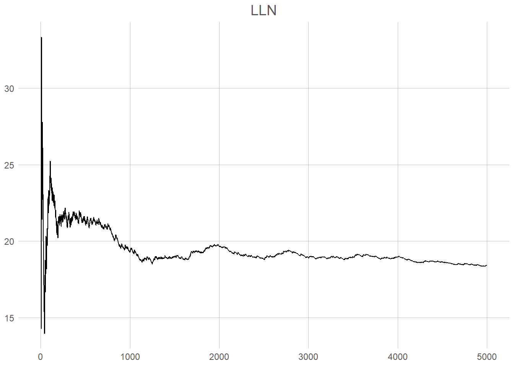
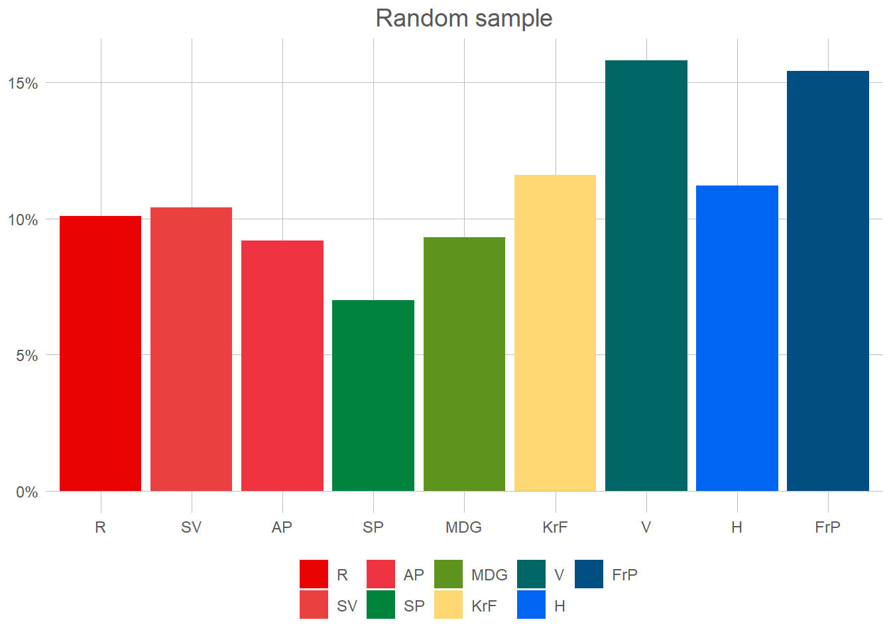
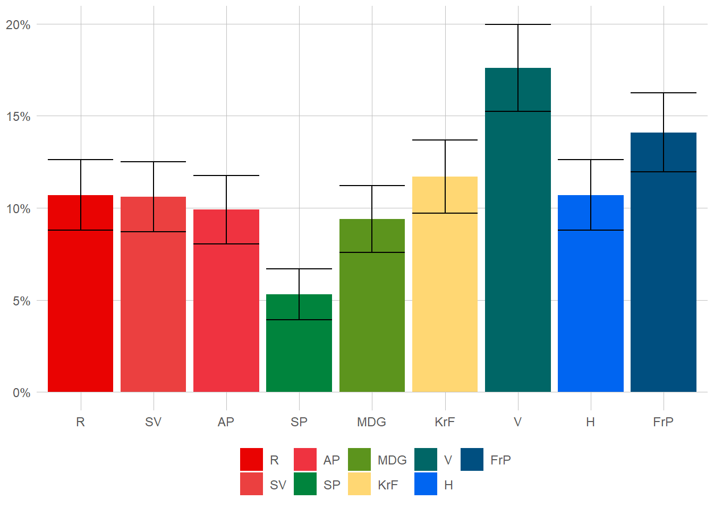

Statistical inference
Political Science, be it qualitative studies of the bureaucracy or playing numbers with Great Power conflicts, have on common goal: to observe, and from that understand, politics.1 To do this then (in the way we learned when discussing descriptive statistics) it should be clear that we must first observe all of the political life. If you do not know the intention of every voter, how can you attempt at predicting an election? Unfortunately as scientists we rarely, if ever, have the option of observing all that which we would like to understand. At best we may hope to see a small slice of the world, a sample, and hope that it represents that which we are hoping to understand. This idea – of going from a small sample of the world – to a knowable yet uncertain description of the real world is what we call statistical inference. In this chapter we shall look firstly at what a sample is, how we can make it representative, and finally how that can be turned into (uncertain) decisions.
A not so small world
For this chapter we will utilise some (invented) voter data to see how we can describe the world. Lets first take a look at out whole sample. In total we have 100 000 voters, from 18 to 70 year old, with roughly 50/50 men and women. Seeing all of these we can take a quick look at the true state of the world.


The data we have here is of course not unobservable. Indeed, if we choose to see out goal of prediction not as individual votes but as the election-result, this is directly and universally observable every 4th year. What we want to achieve, is to observe this also between election, usually through the use of phone-surveys and similar. This surveys attempts at creating a random sample. Lets start at non-random sample of 30 voters.

This shows the voting patterns of men over 50 for the first 100 rows of our data. Now, before looking more at the results here we need to go through some important rules!
Firstly, we only, only, care about the population. If someone ever says that 25 % of the sample is something, you should immediately react in horror as nobody ever cares about the sample. Actually, if you write about what happens in the sample this is now your whole population and you have observed all of it! Congratulations, you are no longer uncertain about anything and can just state the correct answer. You no longer need statistics.
Secondly, you should always give an answer.2 That answer of course should be based on the data you have available, and the best you can make from it. Sometimes you may say to yourself: “Well this is awful data! I only have men over 50, and not even a percent of them! Certainly I’m so uncertain I couldn’t say whether they vote at all!” Well that’s terribly unfortunate. Luckily, statistics gives us the tools to say how uncertain we are.
Lets look back at our sample. How many people (in Norway, not in our sample) do we believe vote for the Liberals (V)? Well, the number says 25 % so that’s our answer. Now, is that correct? In other words, if we had access to the whole population, is this what we should expect? Seems highly unlikely. Ok, so how uncertain are we about our results then? Ok, don’t hate me, but I lied. Sort of, in this sample we aren’t able to say how uncertain we are3. Here we will look at two simple rules to get a good sample. Firstly, the law of large numbers, and secondly an i.i.d. randoms ample.
Law of Large Numbers
The law of large numbers (LLN) is quite straightforward. For our purpose we can define it something like this: “As the number of draws from a sample increases the sample-average should converge to the population-average.” If you would like a more stringent definition you may prefer:
\[ \lim _{n\to \infty }\sum _{i=1}^{n}{\frac {X_{i}}{n}}={\overline {X}} \]
Now, how can this help us in finding out election results? Lets go back to attempting to find the percentage of the voters who prefer the Liberals. Imaging that we draw one sample from the population. In this case the sample-average will be quite easy to imagine; either it is 1, we found a liberal-voter, or it is 0, we found any other voter. If we draw 2 samples, we might find that it is either 100, 50, or 0 % depending on who we ask. To find the true answer (which where around 18 %) we would need a minimum of 50 people, 9 of them being liberal-voters4.

This plot shows the moving percentage of liberal voters as we draw more and more people from our population5. The first couple of draws are visibly incredibly wrong (both going towards 0 and up to nearly 50 %). It is also unstable, moving up and down as a drunken roller-coaster. Look, however, what starts to happen at round one thousand draws and is nearly complete at 4 000. The line at that point nearly stops moving at 18.42. That is 0.02 percent of the true value of 18,4 %. Remember, this is 5 000 draws from a population of 100 000, and still not a random sample. This is specifically just the first five thousand. To look more closely at the process, when taking the mean of 1000 draws we get 19.3 %, and the final after 5 000 is 18.42 %, a change of 0.88 %.
OK, so you’re not yet happy? Five thousand is a lot of calling to do (you do remember that our example is phone-surveys?), and of course it could be that the first 5K where only far-right mensheviks. So, what can we do to make you happy. The most important way to solve this issue of having to draw an immense amount of data, is to utilise what is known as random sampling.
Random sampling
So far, it is of course I, the grandiose author, who has written this text. This may of course for you the dear reader seem rather random. I suppose that you would have not thought any of it had it been any other author who had written the text. Let us no for a moment imagine that we we picked a completely other person, with a slightly better language, to explain random sampling and i.i.d. to you. What could (though, of course, not necessarily had to) be the result?
Ah, random sampling, a marvelous tool in the vast and perplexing galaxy of statistics. Picture this: You’re on a quest to find out the percentage of voters who prefer the Liberals, but calling every sentient being in the population sounds as daunting as trying to navigate an asteroid field blindfolded. Fear not, dear hitchhiker! Random sampling comes to the rescue, offering a way to select a representative subset without losing your sanity.
Random sampling is like waving a magical wand over the population, bestowing an equal chance upon each individual to be chosen. It’s the universe’s way of saying, “Hey, everyone gets a shot at being part of the party!” So, whether you’re a Vogon, a Betelgeusian, or a humble Earthling, you all have an equal opportunity to be plucked from the crowd. It’s democracy in action, statistical style!
Now, let’s journey deeper into the realms of “identically independently distributed” or i.i.d. In this vast cosmic carnival of statistical inference, we assume that our data behaves in a predictable and fair manner. Identically means that each observation is like a cosmic sibling, drawn from the same celestial gene pool. They share the same traits, quirks, and voting preferences. It’s like a cosmic family reunion, but without the awkward arguments over interstellar politics.
Independently is the watchword of the universe. It means that each data point has no influence over its fellow companions. They dance to their own cosmic beat, oblivious to the others’ moves. It’s like a synchronized swimming performance, but with each swimmer following their own unique routine. They might be part of the same watery ensemble, but they’re free to do their own aquatic acrobatics.
Lastly, distributed. Ah, the grand cosmic tapestry of probability distributions! It’s like a vast intergalactic marketplace where values are bought and sold. Assuming our observations are identically independently distributed means they all come from the same celestial bazaar. They’re samples from the same galactic bargain bin, each value having an equal chance of being plucked out. It’s a level playing field where even a humble Earthling has a shot at galactic greatness!
By embracing random sampling and assuming the i.i.d. cosmic dance, we unlock the secrets of the universe. We can analyze our celestial sample and extract insights that hold true for the entire population. It’s like unraveling the mysteries of the cosmos, but with data instead of telescopes.
So, dear hitchhiker, armed with random sampling and the i.i.d. principle, you can boldly explore the statistical wonders of the galaxy. With a touch of randomness and the harmony of independence, you’ll uncover celestial truths and bring statistical enlightenment to the universe. Just remember your towel and never panic in the face of p-values!
Some might argue that it’s not entirely random who I stole the style from. To them I simply say that I hope your house will be turned into a motorway. Let us now try this new style of sampling, we draw 1000 respondents from our population, this time completely at random.

So, what did the Liberals get at this attempt? 18.4 %. So the exact same result as when we drew five thousand voters, but with a fifth of the phone calls. Quite amazing isn’t it? Now, our last question then is really what we began with. How uncertain are we of our results?
Uncertainty!
So let me begin by telling you a secret. I chose a 100 000 voters because it’s a big round number. It has actually nothing of interest to us. Remember how I said that the only thing we care about is the population? Ok, that’s my 4th lie. At this point we’re going to care about the sample. Now here is a third, and final, rule. “The uncertainty of a statistic from a random sample is only dependent on the sample size.” Not the size of the population. Not the amount of variance. Not how much facebook commentators seems to disprove of the results. If a thousand random respondents is enough in Norway with 3,8 million voters, it’s enough in India with 912 million voters. You want proof? Your dad don’t buy my claim that with a thousand people I can tell you the worlds most popular basketball-player? The proof can be seen in this little formula showing the standard error of the proportion6. P here means the proportion, and n the number of respondents.
\[
\sqrt{\frac{\hat{p}(1-\hat{p})}n}
\]
As is immediately visible (and really, should be expected) as the number of respondents increase the standard-error decrease. Should you somehow manage to get an infinite number of respondents, the error would be 0. One way of doing this would be to add some simple error bars to our marvellous plot. This is rather simple. Let’s first calculate the confidence interval for each of our parties. We’ll here use a 95 % confidence interval, which means that if we calculate an infinite amount of these intervals, 95 % of the time the true proportion will be within said interval. Bit confusing, but lets just use that as our uncertainty for now. To get that number we first calculate the standard error for each party, multiply this with 1.967, withdraw that from our percentage to get the lower limit and add it to get the upper.

What is then the conclusion? Well, the Liberals seems to have 18.5% of the votes, +/- 1.23 percentage points.
Hypothesis Testing
So, the end of what I promised in the beginning! Hypothesis testing, t-values, p-values, significance, and experiments. All these fancy words for really, a very simple question; “Should I be surprised by my data?” This is the part above where I said we can use statistics to make decisions. Now we are going to introduce a fifth rule in the same style as above. Importantly though, this one definitely doesn’t only apply here. Have you first decided to to (classical frequentist) hypothesis-testing this is always true.
- You are only allowed to answer yes or no when asked about your hypothesis.
So, when would we force ourself to ask such a question? Well, lets look back at our Liberal friends. Preparing for the election and their campaign they may wonder which groups are more likely to vote for them than others. For example it may be that there are certain election districts where they are more popular than others. Logically, that is not where they should put their focus8. So, first we need to find a question. Now, how may we do that? You tell me, you prob should have some theory or understanding of the world or something like that. That actually sounds like a you problem, not me. The important part is that you are only allowed to ask yes or no questions. If the answerer could be “maybe”, or “could be”, or “it goes in the square hole”, you’ve asked the wrong question.
So, I guess I’ll have to make the question then. Lets first take a quick look at voters pr. district. What should we expect to see? Well, if there are absolutely no correlation between party and district we should expect there to be roughly the same number of voters for each party in each district. If there is perfect correlation between each party and a district, we expect that voters for a party x is only within district y. How can see that? Well a good start would be to make a table, find the nr. of voters of each party in each district.
tb <- valgdata %>%
slice_sample(n = 1000) %>%
select(district, vote) %>%
filter(vote == "V")
tb %>%
select(-vote) %>%
tbl_summary()| Characteristic | N = 1951 |
|---|---|
| district | |
| Akerhus | 12 (6.2%) |
| Aust-Agder | 4 (2.1%) |
| Buskerud | 8 (4.1%) |
| Finnmark | 17 (8.7%) |
| Hedmark | 5 (2.6%) |
| Hordaland | 14 (7.2%) |
| Møre og Romsdal | 12 (6.2%) |
| Nord-Trøndelang | 10 (5.1%) |
| Nordland | 14 (7.2%) |
| Oppland | 8 (4.1%) |
| Oslo | 9 (4.6%) |
| Rogaland | 6 (3.1%) |
| Sogn og Fjordande | 13 (6.7%) |
| Sør-Trøndelag | 15 (7.7%) |
| Telemark | 18 (9.2%) |
| Troms | 2 (1.0%) |
| Vest-Agder | 12 (6.2%) |
| Vestfold | 4 (2.1%) |
| Østfold | 12 (6.2%) |
| 1 n (%) | |
So, does this look random to you? Well, the problem is that we don’t really know, do we? Yes, they have only 2.6 % in Hedmark and 9.8 % in Telemark, so that seems like they are more popular in the latter but…do you trust yourself to just say that? You do? Really? Would you mind sharing your confidence with me? I’m going to do the hypothesis test instead, and see if it fits with what I believe to be the answer.
Ok, so what’s an hypothesis test? Well, as the name implies it something we use to test hypotheses. Specifically, two of them. The null hypothesis, and the alternative hypothesis. The latter just being the negation of the former. So, we can start by the null hypothesis, what does that mean? We first need to define our variables, here, district and voters for the liberal party. The null hypothesis simply states that there is no relation between these two variables; so to understand this, we just need to imagine how the world would look like if there where no relationship at all. For example, if Telemark had a hundred percent liberal voters, and no other district had any at all, we might assume that it would be weird for there not be a relation. However, if there is exactly 5.3 % (1/19th) in each district, then it seems like the relation might not be there. If there is 9 % in Telemark and 4.7 in everyone else, Telemark might just be a fluke of our sample. So many questions, so few answers. So, what’s the alternative hypothesis then? Well that one’s easy. It’s just that the null hypothesis is wrong. You will notice that they cannot both be true at the same time! If the null hypothesis, then by definition, the alternative is false. If the…no wait! Ok, I mentioned how we are working with probabilities and uncertanty right? In a perfect universe we would have this9:
\[ \begin{equation} H_1 \rightarrow \neg H_0 \end{equation} \]
\[ \begin{equation} \neg H_1 \rightarrow H_0 \end{equation} \]
The first one is easy, if \(H_1\) is true then \(H_0\) is not true. However, the next step, if the alternative hypothesis is not true then the null hypothesis is, does not work with our tests. Why? The hypothesis test (of which there are several, but here we will use the chi-squared test) begins by assuming that the null is true. That is, when we begin the test we have already decided that there is no correlation. If we then do the test and it shows there to not be a connection, what have we done? Certainly not proven anything! We decided the answer! Ok, so we have assumed there not to be a connection, how would the world look like then? Well, that’s quite difficult to answer isn’t it. As I said we will use the chi-square test to figure this out. It gets its name from the chi-square distribution which shows how the distribution of counts in a table would look like if said counts where randomly places around the table. The result it gives is then the p-value. Let’s quickly make a table that shows it, and then we’ll try to understand what it means.
tb %>%
mutate(vote = droplevels(vote)) %>%
select(district, vote) %>%
add_count(vote, district) %>%
mutate(p = round(chisq.test(.$n)$p.value, digits = 5)) %>%
select(-n) %>%
tbl_summary(by = vote, statistic = list(p ~ "") )| Characteristic | V, N = 1951 |
|---|---|
| district | |
| Akerhus | 12 (6.2%) |
| Aust-Agder | 4 (2.1%) |
| Buskerud | 8 (4.1%) |
| Finnmark | 17 (8.7%) |
| Hedmark | 5 (2.6%) |
| Hordaland | 14 (7.2%) |
| Møre og Romsdal | 12 (6.2%) |
| Nord-Trøndelang | 10 (5.1%) |
| Nordland | 14 (7.2%) |
| Oppland | 8 (4.1%) |
| Oslo | 9 (4.6%) |
| Rogaland | 6 (3.1%) |
| Sogn og Fjordande | 13 (6.7%) |
| Sør-Trøndelag | 15 (7.7%) |
| Telemark | 18 (9.2%) |
| Troms | 2 (1.0%) |
| Vest-Agder | 12 (6.2%) |
| Vestfold | 4 (2.1%) |
| Østfold | 12 (6.2%) |
| p | |
| 0.02264 | |
| 1 n (%); | |
Here we can again see our table with the same numbers, i.e. the nr. of liberal voters in each district. The question in our test is quite straightforward:
“What is the probability that a table with at least a extreme values as this is what we would see in our sample given that the null-hypothesis is true.”
Let us try to reformulate the question to be a bit more fitting with our specific example:
“What is the probability that we have gotten this table, given that the true percentage in each district is 5.3 %“
This is then what the p-value, that you can see in the bottom of the table, gives us. Assuming the null hypothesis to be true, the probability that we will observe this table is .002. Another way of stating it is that if we draw an infinite amount of samples from the population and make this table, we should expect to see this one 2.2 % of the time.
To be able to make some decision based on this probability we must first decide some level at which we are willing to say that there is a correlation and not just a fluke. One way of thinking of this is how often you are willing to make a mistake. Say that you are willing to say that the results are significant, i.e. you believe there to be a true correlation in the population, as long as the p-value is below 1. Now you will always have significant results, no matter your data.10 Of course, nearly all of them will be wrong. Let’s instead say that we only decide to believe them if the p-value is below 0.0000000001. The probability that you will believe a false alternative hypothesis is now of course ridiculously low, but you will probably loose all of the true ones as well, throwing the baby out with the bathwater as to say. A common rule of thumb is that we reject the null if the p-values is less than 0.05.11 So what can we reas in our table? Since the p value at 0.02 is less than our target of 0.05, we can assume that there is a true correlation between which district someone is from and whether they vote for the Liberals or not. So in which districts should the Liberals put their efforts? I’ll let that be your last riddle dear reader, the number only tells you that you should differ in where not where you should go.
And thus, we reach the underwhelming conclusion of our statistical escapade. With t-values, standard errors, and sampling errors in our cosmic toolkit, we venture forth armed with a sense of mild statistical satisfaction. While statistics may not provide the grand cosmic revelations we yearn for, it offers a humble glimpse into the patterns and uncertainties of our data-driven universe. So, dear hitchhiker, go forth with a gentle shrug of statistical acceptance, for even in the face of underwhelming conclusions, statistics continues to shed a flickering light on the mysteries that surround us.
So long, and thanks for all the fish!\(\exists n \in \mathbb{Z}^+, (n > 41 \land \neg \exists m \in \mathbb{Z}^+, (m > 41 \land m \neq n))\)
Footnotes
Define that as you self please.↩︎
At least in this course that is. In reality the uncertainty may get so high that “I ain’t got the slightest clue” may be a reasonable answer.↩︎
Ok, so that’s a lie too. There are ways to find the uncertainty on non-random samples. The people over at the mathematics faculty are probably more than willing to explain it to you.↩︎
Assuming that you want an integer-number of voters. If you allow for any real-number amount of voters you may of course choose whatever values you would like.↩︎
You may ask yourself; “But if we want to prove that we will reach the actual mean, why stop at 5K draws and not finish the 100k?” Cause my computer is slow, and it’s correct enough. Now stop asking annoying questions.↩︎
Note that there exists loads of different standard errors. Here we use the one for proportions because, well you know, we’re working with proportions.↩︎
So where did I get 1.96 from? The t-value as it is called shows how many standard-deviances a number is from the mean. If a number is 1.96 away from the mean of t-distributed distribution, 95 % of the values will be within them. Confusing? Absolutely.↩︎
If you wonder about the logic, the point is that there is no reason to fight for seats they already have. You want to put resources on those places where you may but are not guaranteed to win.↩︎
We often denote the null hypothesis (that there is no connection between our variables) as \(H_0\) and the alternative (that there is some connection) as \(H_1\)↩︎
Usually we seperate these as Type I and Type II errors, the first being falsely rejecting a true null-hypothesis, the latter not being rejecting a false one. Often we assume the former to be worse than the latter, though that may depend on the goal of your analysis.↩︎
You may ask, why 0.05? The simple answer is that when R. Fisher wrote one of the first and defining books on frequentist statistics, Design of Experiments, he wrote:
“The value for which P=0.05, or 1 in 20, is 1.96 or nearly 2; it is convenient to take this point as a limit in judging whether a deviation ought to be considered significant or not. Deviations exceeding twice the standard deviation are thus formally regarded as significant. Using this criterion we should be led to follow up a false indication only once in 22 trials, even if the statistics were the only guide available. Small effects will still escape notice if the data are insufficiently numerous to bring them out, but no lowering of the standard of significance would meet this difficulty.”There is not really any other reason than this, and plenty of reasons to choose something else.↩︎